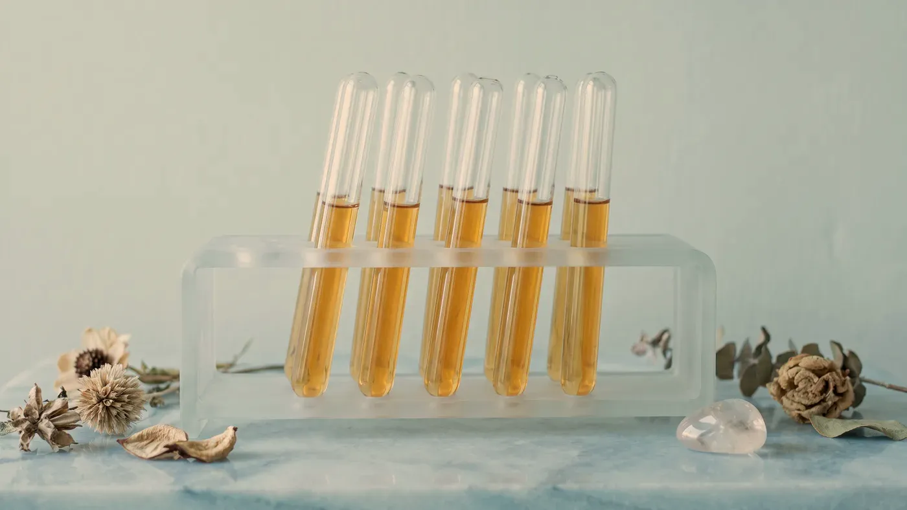
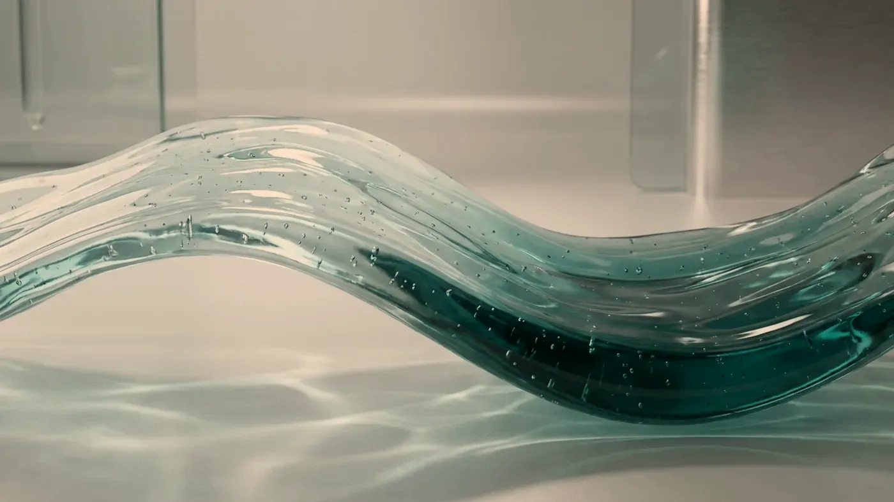

Enjeksiyonla Yapılanlar · Otolog Plazma
Kaynağı kendi kanınız, hedefi cilt kalitesi olan bir uygulama.
PRP, koldan alınan az miktarda kanın santrifüjle ayrıştırılmasıyla elde edilen, trombosit oranı yükseltilmiş plazmanın aynı randevuda yüz, boyun, dekolte ya da el sırtı cildine verilmesidir. Cildin kendi yenilenme süreçlerinin desteklenmesi amaçlanır. Saç dökülmesine yönelik uygulama ayrı bir sayfada anlatılır; hangi bölgeye ne planlanacağı muayenede belirlenir.

Temsilî görsel · yapay zekâ ile üretildiTanım ve kapsam
PRP cilde ne yapar, hangi beklentiyi karşılamaz?
Bu sayfa yüz, boyun, dekolte ve el sırtı cildine yönelik PRP’yi anlatır. Şikâyetiniz saç seyrelmesiyse saç PRP sayfasına geçebilirsiniz; cilt tarafında nem kaybı ve donukluk ile gözenek ve cilt dokusu sayfaları, bölge planı için yüz sayfası yol gösterir.
Bir yara oluştuğunda kanamayı durdurmak için ilk harekete geçen trombositler, iyileşmeyi yönlendiren büyüme faktörlerini de salgılar. PRP bu doğal mekanizmadan yararlanır: kanınızdaki trombositler küçük bir hacimde toplanır ve cildin desteklenmek istenen katmanına bırakılır.
Tüp, siz odadayken üzerine adınız yazılarak hazırlanır ve kan alındıktan sonra santrifüj cihazına yerleştirilir. Kısa bir döndürmenin ardından kırmızı hücreler dibe çöker, üstte açık renkli plazma kalır; kullanılacak bölüm buradan ayrılır. Plazma o gün yalnızca size uygulanmak üzere hazırlanır, artan kısım saklanmaz.
Kullanıldığı alanlar yüz, boyun, dekolte ve el sırtıdır; cildin dokusu, inceliği ve parlaklığıyla ilgili şikâyetlerde değerlendirilir. İnce iğnelerle tek başına verilebildiği gibi, altın iğne radyofrekans ya da fraksiyonel lazer seansında açılan mikro kanallara yayılarak da planlanabilir. Göz çevresi gibi ince deri bölgelerinde miktar ve derinlik ayrıca ayarlanır.
Dolgu yerine geçmez: elmacıkta, çene hattında ya da göz altında belirgin çöküntü varsa plazma bu boşluğu doldurmaz; hacim konusu dolgu uygulamaları sayfasında ele alınır.
Mimik çizgilerini gevşetmez: alında ya da kaş arasında kas hareketiyle derinleşen çizgiler başka bir planlamanın konusudur.
Sarkmayı kaldırmaz: deri ve alt doku belirgin biçimde yer değiştirdiyse PRP bu tabloyu geri çevirmez; cerrahi gerektiren bir durumun karşılığı olarak sunulamaz.
Vücudun geneline etki etmez: PRP bir “kür” değildir; bağışıklık, enerji ya da genel sağlık üzerine öne sürülen iddiaların bilimsel dayanağı yoktur. Plazmanın etkisi, verildiği cilt bölgesiyle sınırlı kalır; vücudun başka bir yerinde etki göstermesi beklenmez.
Cilt için PRP üzerine yayımlanmış çok sayıda çalışma var; ancak her ekip kanı farklı bir düzenekle hazırlıyor, farklı sıklıkla uyguluyor ve sonucu farklı ölçütlerle değerlendiriyor. Bu çeşitlilik, “PRP şu kadar etkilidir” diye tek bir rakam söylemeyi olanaksız kılıyor. Önerimiz, PRP’yi cilt kalitesini destekleyebilecek ama yanıtı kişiden kişiye değişen bir seçenek olarak görmenizdir.
Randevu ve iyileşme
Randevu günü neler olur, sonraki günlerde ne görürsünüz?
Randevu, kısa bir sağlık sorgusu ve gerekiyorsa kan değerlerinize bakılmasıyla başlar. Uygulamanın kendisi hızlıdır; asıl süreç, cildin sonraki haftalarda vereceği yanıttır.
Randevu süresi
Uyuşturucu kremin beklenmesi, kan alma, hazırlık ve uygulama birlikte yaklaşık bir saatlik bir zaman dilimine sığar.
Çubuk uzunlukları yalnız karşılaştırma içindir; size özel süreler muayenede konuşulur.
- Muayene: cilt tipi, şikâyetin kaynağı, kullandığınız ilaçlar
- Gerekirse tam kan sayımı; trombosit değeri ve kansızlık açısından
- Beklentinin ve verinin sınırlarının konuşulduğu aydınlatma, yazılı onam
- Koldan kan alma ve steril koşullarda santrifüj
- Uygulama; bakım talimatı yazılı verilir, kontrol günü belirlenir
“Seans sayısını artırmak, yanıt vermeyen bir cildin çözümü değildir.”

Temsilî görsel · yapay zekâ ile üretildiCildinize uygun mu, birlikte bakalım
Karar, muayene ve öykünüz değerlendirildikten sonra verilir.
Randevu isteyinUygulama yapılmayan durumlar:
- Trombositlerin az olduğu ya da görevini yapamadığı kan hastalıkları
- Kanser nedeniyle tedavi görmek ya da tedavi sonrası yakın izlemde olmak
- Uygulanacak alanda uçuk, iltihaplı sivilce, enfeksiyon veya kapanmamış yara
- Karaciğerin ciddi biçimde etkilendiği hastalıklar, düzenlenememiş pıhtılaşma sorunları
- Kana yayılmış, ağır seyirli enfeksiyonlar (sepsis)
- Hamilelik ve bebeğin emzirildiği dönem
Ertelenen ya da ayrıca planlanan durumlar:
- Aspirin benzeri ilaçlar ya da kan sulandırıcılar — ilacı kendi başınıza bırakmayın; gerekiyorsa reçeteyi yazan hekimle konuşulur
- Son günlerde geçirilen ateşli bir hastalık, enfeksiyon ya da yapılan bir aşı
- Kan sayımında trombositin düşük ya da hemoglobinin belirgin azalmış çıkması
- Kol damarlarından kan almanın zor olması ya da iğne karşısında bayılma öyküsü
- Saç seyrelmesi şikâyeti — bu başlık saç PRP kapsamında ayrıca değerlendirilir
İlk günlerdeki hafif kızarıklık ve şişlik her gün biraz daha azalmalıdır. Tersine ağrı artıyor, bölge ısınıyor, iltihaplı bir akıntı ya da büyüyen bir kızarıklık beliriyor veya ateşiniz çıkıyorsa kontrol gününü beklemeden muayenehaneye ulaşın. Soluk almakta güçlük, vücuda yayılan döküntü ya da bayılma hissi acil durumdur: 112 Acil Çağrı Merkezi’ni arayın ya da en yakın hastanenin acil birimine başvurun.
Seans takvimi
Kaç seans planlanır, etkinin süresi neye bağlıdır?
Yüz, boyun, dekolte ve el sırtı cildinde PRP genellikle birkaç seanslık bir dizi hâlinde, aralarında birkaç hafta bırakılarak uygulanır; kaç seans yapılacağı ilk görüşmede sabit bir sayı olarak belirlenmez. Deri hücrelerinin yenilenmesi zaman aldığından, ilk seanstan birkaç gün sonra aynaya bakarak karar vermek doğru olmaz; değerlendirme dizinin ortasında ve sonunda yapılır. Bu kontrollerde üç yol vardır: aynı planla devam etmek, PRP’yi bir cihaz uygulamasıyla birleştirmek ya da diziyi bitirmek. Değişikliğin ne kadar süre korunacağını yaşınız, güneşle ilişkiniz, sigara ve genel sağlığınız belirler; aynı plan iki kişide farklı sonuç verebilir. Saçlı derideki takvim farklıdır ve saç PRP sayfasında ayrıca anlatılmıştır.
Sık gelen sorular
Bir soru seçin, yanıtını okuyun
Bir adım ötesi
Cildinizi önce birlikte değerlendirelim
Hangi uygulamanın size uygun olduğu, şikâyetiniz ve öykünüz dinlendikten sonra belli olur; Bakırköy’deki muayenehanemiz için randevu talebi bırakabilirsiniz.
Metni hazırlayan ve tıbbi açıdan gözden geçiren: Uzm. Dr. Rahmi Cebeci (Aile Hekimliği Uzmanı · Medikal Estetik Sertifikalı).
Buradaki anlatım herkese yöneliktir; size özel bir teşhis ya da tedavi planı sunmaz, muayenenin yerini tutmaz. Her uygulamanın etkisi kişiye göre farklı olur.